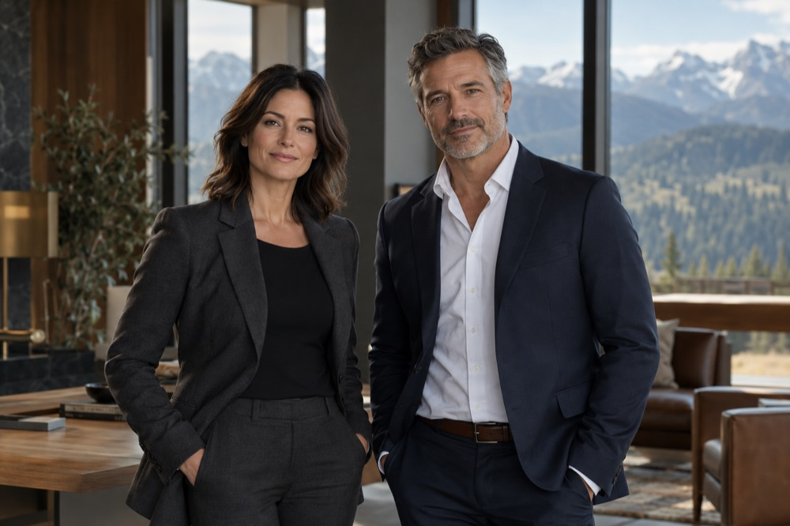

Fictional partner / 01
Avery Howl
A considered voice for business and contract themes. Avery’s character is written around careful listening and explaining the decision ahead.
Steady by nature
A wider view.
A clearer way forward.
An imagined practice with a simple starting point: understand the whole picture.
Explore the practice themes01 / Our approach
Before a direction,
an understanding.
Important decisions rarely arrive neatly organized. The Howl & Timber concept begins with careful questions, plain language, and room to see the wider context.
Listen before narrowing the question. Bring the details into focus. Make the next step understandable.
Meet the fictional partnersUnderstand the context before narrowing the question.
Separate the essential decisions from the surrounding noise.
Set out a considered path and explain what comes next.
02 / Practice themes
Three illustrative practice themes. Open a topic to explore its perspective and sample areas of focus.
A business relationship starts with shared expectations. This theme brings agreements, ownership, and everyday responsibilities into focus.
A place has a present purpose and a future story. This theme takes a longer view of ownership, transitions, and the plans connected to them.
A disagreement can narrow the view. This theme considers the context, the competing priorities, and the value of a prepared response.
03 / The people
Meet Avery Howl and Rowan Timber, the invented partners behind the concept. Portraits are AI-generated; these profiles do not represent actual attorneys or qualifications.

Fictional partner / 01
A considered voice for business and contract themes. Avery’s character is written around careful listening and explaining the decision ahead.
Fictional partner / 02
A patient perspective on property and dispute themes. Rowan’s character brings a focus on preparation and the wider context.
A Rogers Holdings design demonstration
Howl & Timber is a fictional firm created for this website design demonstration. Its practice themes and people are invented. No licensed attorneys, legal advice, consultations, client relationships, testimonials, or case results are represented. Messages and document uploads are unavailable.
Return to Our Work